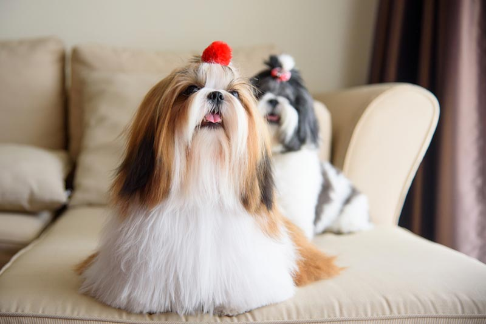

Pet Channel
| มอลทีส (Maltese) |
|  |
ลักษณะทั่วไป มอลทีส หรือ มัลทีส เป็นสุนัขที่มีนิสัยร่าเริงแจ่มใส เรียบร้อย และเชื่อฟังคำสั่ง สุภาพอ่อนโยน มีความเป็นมิตรกับคนทั่วไปชอบที่จะให้อุ้มหรือกอดอยู่เสมอ ในบางครั้งอาจจะเกรี้ยวกราดบ้างกับสุนัขด้วยกัน มอลทีสเป็นสุนัขที่มีนิสัยอิจฉาชอบประจบเจ้าของ รักเจ้าของมาก ชอบปกป้องเจ้านายหรืออาณาเขตของมันเองออดอ้อนออเซาะ ไม่เป็นรองใครมีความฉลาดแสนรู้ แต่จิตใจกล้าหาญ เด็ดเดี่ยวไม่ยอมใครดังนั้นจึงไม่เหมาะที่จะเลี้ยงรวมไว้กับสุนัขตัวโตๆ เพราะจะมีโอกาสรอดไม่ถึงแก่ตาย โดยปกติแล้วไม่ควรทิ้งให้อยู่ตามลำพังเป็นเวลานานๆ มอลทีส ไม่ใช่สุนัขที่เลี้ยงไว้เพื่อใช้งาน แม้ว่าจริงๆแล้ว เขาก็เฝ้าบ้านได้ดีและก็สามารถฝึกให้เชื่อฟังคำสั่งได้ดีเช่นกัน มอลทีส เป็นสุนัขที่มีความรักให้กับคุณอย่างมากมาย ทำให้คุณชื่นใจทุกครั้งด้วยการคอยต้อนรับคุณที่ประตูเป็นสุนัขที่ฉลาดและชอบให้เอาใจ |